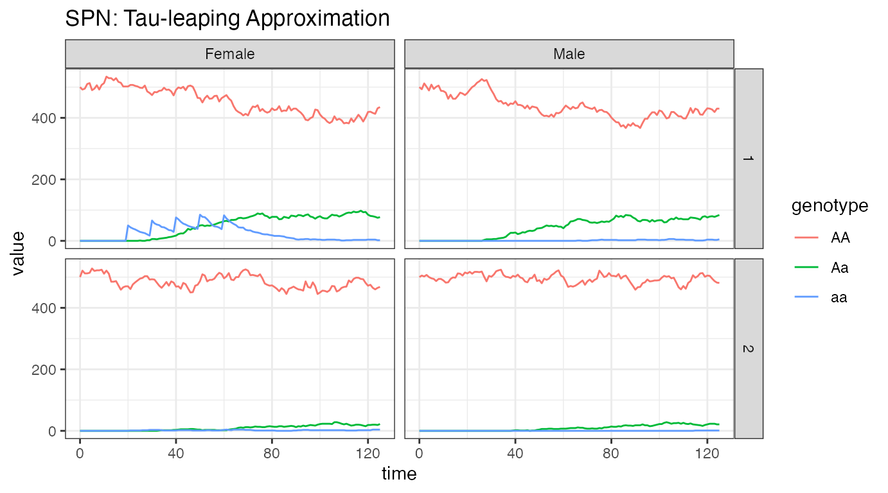

vignettes/lifecycle-network.Rmd
lifecycle-network.RmdThis vignette describes how to use the facilities provided by MGDrivE2 to run simulations of gene drive dynamics on metapopulation networks; a network of mosquito breeding sites where edges represent the directed per-capita rate of migration between nodes. The movement rates are allowed to be asymmetric and to differ between male and female mosquitoes.
We start by loading the MGDrivE2 package, as well as the MGDrivE package for access to inheritance cubes, ggplot2 for graphical analysis, and Matrix for sparse matrices used in migration. We will use the basic cube to simulate Mendelian inheritance for this example.
# simulation functions
library(MGDrivE2)
#> Loading MGDrivE2: Mosquito Gene Drive Explorer Version 2
# inheritance patterns
library(MGDrivE)
#> Loading MGDrivE: Mosquito Gene Drive Explorer
# plotting
library(ggplot2)
# sparse migration
library(Matrix)
# basic inheritance pattern
cube <- MGDrivE::cubeMendelian()We specify biological parameter values and equilibrium population sizes. We will use the same parameter values as in the vignette “MGDrivE2: One Node Lifecycle Dynamics”, additionally specifying the total simulation time (tmax) and the timestep to save output (dt).
# entomological parameters
theta <- list(
qE = 1/4,
nE = 2,
qL = 1/3,
nL = 3,
qP = 1/6,
nP = 2,
muE = 0.05,
muL = 0.15,
muP = 0.05,
muF = 0.09,
muM = 0.09,
beta = 16,
nu = 1/(4/24)
)
# simulation parameters
tmax <- 125
dt <- 1In order to setup the places and transition of a metapopulation model, we need to provide data describing the edges between nodes so that the network can be constructed. First, we make a very simple 2 node network. We will make a binary matrix adj that indices whether or not 2 nodes are connected by an edge; the absence of an edge means that movement between those two nodes is not possible. We use the sparseMatrix class from the Matrix package because, for larger network topologies, the sparse matrix representation may have significant benefits. It should be specified with the diagonal empty, because we do not consider “migration” to your current location.
Next, we can setup all of the places in the model, provided the entomological parameters above, the inheritance pattern, and the size of the network.
Then, we create all of the possible transitions between states, given the places in the model and the network adjacency matrix.
Finally, as not all transitions apply to all “places”, we create a summary of possible transitions to and from each “place”. This is handled by the spn_S() function.
# adjacency matrix
# specify where individuals can migrate
adj <- Matrix::sparseMatrix(i = c(1,2),j = c(2,1))
n <- nrow(adj)
# Places and transitions
SPN_P <- spn_P_lifecycle_network(num_nodes = n, params = theta,cube = cube)
SPN_T <- spn_T_lifecycle_network(spn_P = SPN_P, params = theta,cube = cube,m_move = adj)
# Stoichiometry matrix
S <- spn_S(spn_P = SPN_P, spn_T = SPN_T)Now that the structural properties of the SPN model have been set up, we will calculate equilibrium population sizes, M0. We will use the same parameter values as in the vignette “MGDrivE2 One Node Lifecycle Dynamics”. Note that when setting M0 we only set the wild-type populations; the equilibrium calculations assume a wildtype population in equilibrium at \(t=0\).
# now that we have a network size, set adult females in each node
NF <- rep(x = 500, times = n)
# calculate equilibrium and setup initial conditions
# outputs required parameters in the named list "params"
# outputs intial equilibrium for adv users, "init
# outputs properly filled initial markings, "M0"
initialCons <- equilibrium_lifeycle(params = theta, NF = NF, phi = 0.5,
log_dd = TRUE, spn_P = SPN_P, cube = cube)Before making the hazard functions and finishing the SPN, we need to calculate movement rates (because in MGDrivE2, the movement matrix is a matrix of per-capita movement rates rather than probabilities; matrix exponentiation would give corresponding probabilities over a time interval). We use the helper function calc_move_rate(), which calculates total per-capita rate of movement out of a node based on mortality rate and the probability to leave that node before dying.
The vector move_rates is the total rate at which a mosquito leaves a node, and the sparseMatrix object move_probs is the conditional probability of where it goes, given it has chosen to leave; we make movement uniform (although it won’t matter in the 2-node case, leaving node 1 means they will always go to node 2). Finally, we attach these objects to the list of parameters initialCons$params.
# calculate movement rates and movement probabilities
gam <- calc_move_rate(mu = theta$muF, P = 0.05)
move_rates <- rep(x = gam, times = n)
move_probs <- Matrix::sparseMatrix(i = {}, j = {},x = 0L,dims = dim(adj))
# uniform movement probabilities
rowprobs <- 1/rowSums(adj)
for(i in 1:nrow(move_probs)){
cols <- Matrix::which(adj[i,])
move_probs[i,cols] <- rep(rowprobs[i],length(cols))
}
# put rates and probs into the parameter list
initialCons$params$mosquito_move_rates <- move_rates
initialCons$params$mosquito_move_probs <- move_probsNow that all the necessary parameters have been added to the named list initialCons$params, we can generate the hazard functions. By specifying log_dd = TRUE, we use logistic density dependence for these simulations.
# approximate hazards for continous approximation
approx_hazards <- spn_hazards(spn_P = SPN_P, spn_T = SPN_T, cube = cube,
params = initialCons$params, type = "life",
log_dd = TRUE, exact = FALSE, tol = 1e-6,
verbose = FALSE)
# exact hazards for integer-valued state space
exact_hazards <- spn_hazards(spn_P = SPN_P, spn_T = SPN_T, cube = cube,
params = initialCons$params, type = "life",
log_dd = TRUE, exact = TRUE, tol = NaN,
verbose = FALSE)Now that the structural elements of the Petri Net have been built, and we have a vector of hazard functions, we can simulate dynamics on the network. First, we will make a data.frame to hold information about the releases; We will release 50 adult females with homozygous recessive alleles 5 times, every 10 days, starting at day 20, and only in node 1. It is critically important that the event names match a place name in the simulation. The simulation function checks this and will throw an error if the event name does not exist as a place in the simulation. This format is used in MGDrivE2 for consistency with solvers in deSolve.
# releases
r_times <- seq(from = 20, length.out = 5, by = 10)
r_size <- 50
events <- data.frame("var" = paste0("F_", cube$releaseType, "_", cube$wildType, "_1"),
"time" = r_times,
"value" = r_size,
"method" = "add",
stringsAsFactors = FALSE)First we run a mean-field approximation of the stochastic model. Internally, MGDrivE2 uses the high quality numerical solvers in deSolve to integrate a mean-field approximation to the stochastic model. We also plot the adult dynamics for both nodes so we can see how the releases spread through the network.
# run deterministic simulation
ODE_out <- sim_trajectory_R(x0 = initialCons$M0, tmax = tmax, dt = dt, S = S,
hazards = approx_hazards, sampler = "ode", method = "lsoda",
events = events, verbose = FALSE)
# summarize females/males by genotype
ODE_female <- summarize_females(out = ODE_out$state, spn_P = SPN_P)
ODE_male <- summarize_males(out = ODE_out$state)
# add sex for plotting
ODE_female$sex <- "Female"
ODE_male$sex <- "Male"
# plot
ggplot(data = rbind(ODE_female, ODE_male)) +
geom_line(aes(x = time, y = value, color = genotype)) +
facet_grid(node ~ sex, scales = "fixed") +
theme_bw() +
ggtitle("SPN: ODE solution")From the plots, we see the initial equilibria in both patches is 500 individuals, the same for each sex, as specified above. We see the releases in node 1 females, and how they quickly spread into the population, becoming evenly spread between females and males. In node 2, we see a much slower introgression of a alleles, all as heterozygous Aa, due to the very low migration rate between nodes. If run long enough, we would eventually see all genotype frequencies reach their equilibrium values in both nodes.
As a further example, we run a single stochastic realization of the same network, using a tau-leaping method with \(\Delta t = 0.1\).
# delta t
dt_stoch <- 0.1
# tau leaping simulation
PTS_out <- sim_trajectory_R(x0 = initialCons$M0, tmax = tmax, dt = dt,
dt_stoch = dt_stoch, S = S, hazards = exact_hazards,
sampler = "tau", events = events, verbose = FALSE)
# summarize females/males by genotype
PTS_female <- summarize_females(out = PTS_out$state, spn_P = SPN_P)
PTS_male <- summarize_males(out = PTS_out$state)
# add sex for plotting
PTS_female$sex <- "Female"
PTS_male$sex <- "Male"
# plot
ggplot(data = rbind(PTS_female, PTS_male)) +
geom_line(aes(x = time, y = value, color = genotype)) +
facet_grid(node ~ sex, scales = "fixed") +
theme_bw() +
ggtitle("SPN: Tau-leaping Approximation")
We see a heuristically similar figure as above. This is only 1 stochastic realization, but it closely follows the dynamics from the ODE solver, indicating that a time-step of 0.1 provides and accurate simulation at this level.